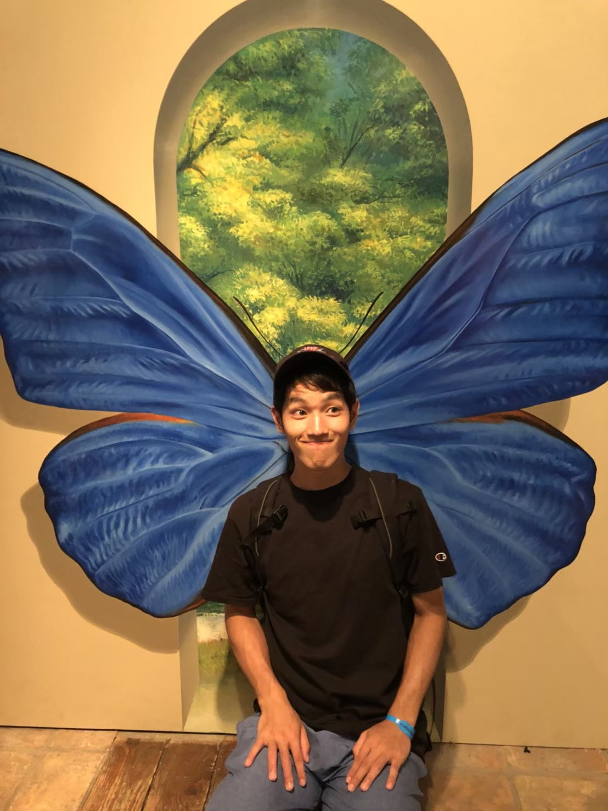

西村和也 (Kazuya Nishimura)
-

博士課程 1年
九州大学
大学院 システム情報科学府
情報知能工学専攻 実世界ロボティクス講座
ヒューマンインタフェース研究室
Google scholar
研究分野
-
バイオ画像解析
- Weakly-supervised cell instance segmentation [Nishimura+, MIA,2021]
[Nishimura+, MICCAI,2019] [code] [slide] [poster]
- Cell mitosis detection [Nishimura+,
EMBC,2020]
- Weakly-supervised cell trackig [ Nishimura+, ECCV2020] [code]
- Semi-supervised cell detection [ Nishimura+, MICCAI2021] [code]
Weakly-supervised 弱教師学習
論文リスト
リストを表示
連絡先
-
〒819-0395 福岡市西区元岡744
九州大学大学院
システム情報科学研究院
情報知能工学部門
E-mail: kazuya.nishimura @human.ait.kyushu-u.ac.jp